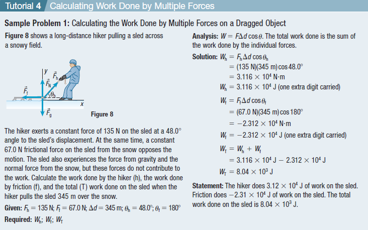

Work Done by Constant Force and Kinetic Energy and the Work-energy Theorem
Work Done by a Constant Force
Work is the product of the magnitude of an object’s displacement and the component of the applied force in the direction of the displacement

In any situation, only the force in the direction of an object’s displacement does work on the object. The equation for calculating the work, W, that a constant force does to cause the displacement, of an object is.

Joule is the SI unit of work and energy; a force of 1 N acting over a displacement of 1 m does 1J of work; symbol J.


Practice
Calculate the work done on a wall if you push on it with a constant force of 9.4 N and the wall does not move.

Positive and negative work
Positive work: when force and displacement are in the same direction, the work performed on an object is said to be positive work.
Example: When a body moves on the horizontal surface, force and displacement act in the forward path. The work is done in this case known as Positive work.

Negative work: Negative work is performed if the displacement is opposite to the direction of the Force applied.
Example: Work was done with the gravity on a rocket going perpendicular upwards.

Practice
A skier slides down a snowy hill and then stops by pressing his skis at an angle to the snow. The snow exerts a constant force of 5.9 N on the skier at an angle of 1508 to the skier’s displacement. The skier moves a distance of 3.5 m. Calculate the work done on the skier by the snow.

Zero Work
Zero Work: When force and displacement are perpendicular to each other, or when force or displacement is zero.
Example: When we hold an object and walk, the force acts in a downward direction whereas displacement acts in the forward direction.

Work Done by Multiple Forces
When analyzing the total work done on an object, all forces that are present, including friction, must be considered. The net effect of these forces can result in either positive, negative, or zero total work done on the object.

Kinetic Energy
Kinetic energy, KE, is the energy an object has due to its motion.
An object’s kinetic energy is directly related to its mass and the square of its speed, according to the following relationship:

You can use dimensional analysis of the equation to identify the units of kinetic energy. Expressing the mass in kilograms (kg) and the speed in metres per second (m/s) shows that the units of kinetic energy are joules (J):
Watch the video to understand how kinetic energy is computed in different cases.
Kinetic Energy and the Work-Energy Theorem

Newton’s second law of motion tells us that when an object is subject to a net external force, it accelerates in the same direction as the force.
Practice
What is the Kinetic Energy of a 1200 kg object that is moving with a speed of 24 m/s?
What is the Kinetic Energy of a 100 kg object that is moving with a speed of 12.5 m/s?
An object moving with a speed of 21 m/s and has a kinetic energy of 140 J, what is the mass of the object?
Underlying Assumptions Related to the Work–Energy Theorem
The work–energy theorem is only true if no energy losses occur. In many real-world situations, energy will seem to disappear in the form of light, sound, heat, or changes in the shape of an object.
This discussion assumes that the applied force is constant. The derivation of the work–energy theorem for a varying force requires calculus, but the result is
the same. The work–energy theorem holds true, even when the applied force is not constant.